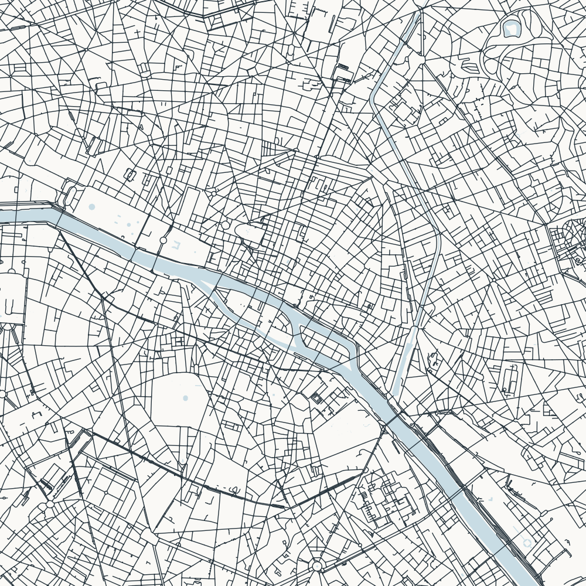

6 × 6 km · North up · Review copy (answer shown)

Paris combines an irregular older street network with long avenues. The Seine and its islands cut through the centre of this diagram.
Check streets, water, framing, and phone-size readability before enabling this puzzle in puzzles.json.